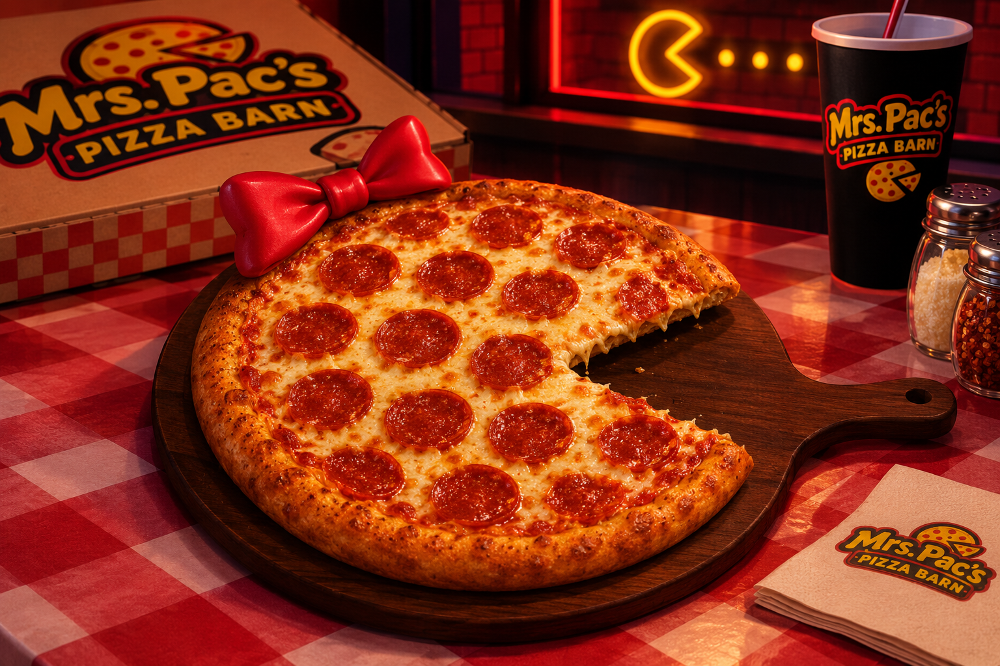
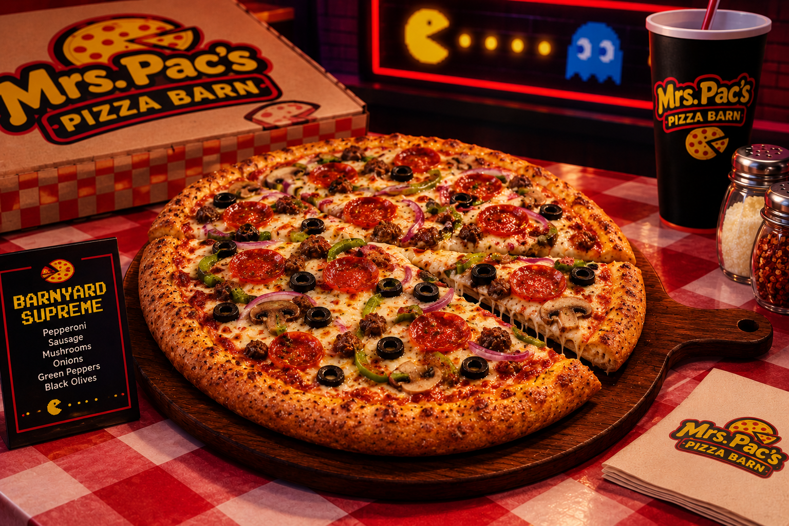

Pac-Man Pepperoni Deal
A large Classic Pac pepperoni pizza, an order of garlic knots, and a 2-liter soda.
$19.99 · Every day
Hot pizza, retro arcade games, and the friendliest crew in town. Pull up a booth and stay a while.

Mrs. Pac's Pizza Barn has been serving hot, hand-tossed pizza to the neighborhood since 1980. Every pie starts with dough made fresh that morning, sauce simmered in our own kitchen, and a whole lot of cheese.
Eat in under the neon lights, grab a box to go, or call ahead and we'll have your order ready when you walk in.
Great deals every day of the week. Just ask for them by name when you order.

A large Classic Pac pepperoni pizza, an order of garlic knots, and a 2-liter soda.
$19.99 · Every day

Two large pizzas with up to three toppings each, a house salad, and four fountain drinks. Feeds the whole crew.
$34.99 · Tuesday and Wednesday nights
We're not a chain. We're your neighbors, and we cook like it.
Open seven days a week. The kitchen takes its last order 15 minutes before closing.